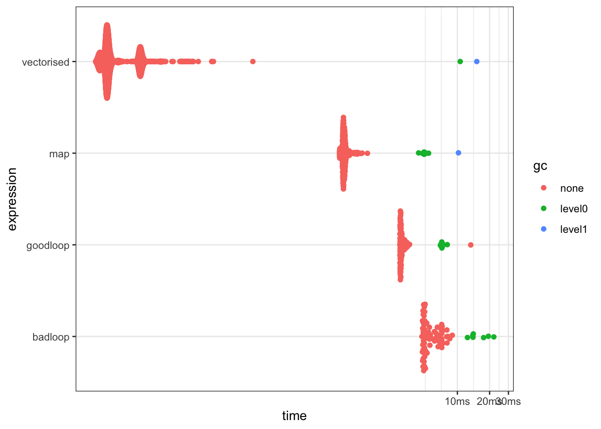

── Attaching core tidyverse packages ──────────────────────── tidyverse 2.0.0 ──
✔ dplyr 1.1.4 ✔ readr 2.1.5
✔ forcats 1.0.0 ✔ stringr 1.5.1
✔ ggplot2 3.5.1 ✔ tibble 3.2.1
✔ lubridate 1.9.3 ✔ tidyr 1.3.1
✔ purrr 1.0.2
── Conflicts ────────────────────────────────────────── tidyverse_conflicts() ──
✖ dplyr::filter() masks stats::filter()
✖ dplyr::lag() masks stats::lag()
ℹ Use the conflicted package (<http://conflicted.r-lib.org/>) to force all conflicts to become errorsWriting Functions in R
Open transparent and reproducible science
Are your R skills sufficient?
Can you spell
funktion FUNkshun
function?
Don’t worry if you cannot
You can
use a \ instead
My first worst function
f <- function(){}
f()Takes no arguments. Does not work. Returns nothing.
Guaranteed never to fail.
fis a terrible name for a function - use a descriptive name- keyword
functionused to define functions ()contain all the arguments separated by commas{}contain the body of the function
Why write functions?
- Reduce code duplication: Don’t repeat yourself
- Share between projects
- Share with others
- Promote better documentation
- Easier to test
- Easier to debug
Don’t repeat yourself DRY
library(tidyverse)
library(palmerpenguins)
penguins |>
filter(species == "Gentoo") |>
ggplot(aes(x = body_mass_g, y = bill_length_mm)) +
geom_point() +
geom_smooth(method = "lm") +
labs(x = "Body mass g", y = "Bill length mm", title = "Gentoo")
penguins |>
filter(species == "Adelie") |>
ggplot(aes(x = body_mass_g, y = bill_length_mm)) +
geom_point() +
geom_smooth(method = "lm") +
labs(x = "Body mass g", y = "Bill length mm", title = "Gentoo")Identify arguments
General – Specific functions
- General - more arguments, more flexible, more complex
- Specific - fewer arguments, less flexible, simpler
penguins |>
filter(species == "Adelie") |>
ggplot(aes(x = body_mass_g, y = bill_length_mm)) +
geom_point() +
geom_smooth(method = "lm") +
labs(x = "Body mass g", y = "Bill length mm", title = "Gentoo")Sanity check inputs
Make your functions idiot proof.
area_square <- function(side = 1) {
if (! is.numeric(side)) {
stop("side must be numeric")
}
if (side <= 0) {
stop("side must be positive")
}
side^2
}
area_square("fish")Error in area_square("fish"): side must be numericarea_square(-1)Error in area_square(-1): side must be positiveKeep it Simple
One function - one job
complex <- function(arg1, arg2, ...) { # bad
# complex code to import data
# complex code to clean data
# complex code to model code
# complex code to plot model
}Large complex function
- difficult to understand
- many arguments
- difficult to test
Break into smaller functions
# Better
import_fun <- function(arg1) {
# complex code to import data
}
clean_fun <- function(.data) {
# complex code to clean data
}
model_fun <- function(.data_clean) {
# complex code to model code
}
plot_fun <- function(.data_clean) {
# complex code to plot model
}
complex <- function(arg1, arg2, ...) {
.data <- import_fun(arg1)
.data_clean <- clean_fun(.data)
mod <- model_fun(.data_clean)
plot <- plot_fun(.data_clean)
list(mod = mod, plot = plot)
} Functions using tidyverse
Tidyverse is fantastic for interactive analyses.
Bit complex with functions.
filter_penguins <- function(.data, species) {
.data |>
filter(species == species)
}
filter_penguins(penguins, "Gentoo") # A tibble: 344 × 8
species island bill_length_mm bill_depth_mm flipper_length_mm body_mass_g
<fct> <fct> <dbl> <dbl> <int> <int>
1 Adelie Torgersen 39.1 18.7 181 3750
2 Adelie Torgersen 39.5 17.4 186 3800
3 Adelie Torgersen 40.3 18 195 3250
4 Adelie Torgersen NA NA NA NA
5 Adelie Torgersen 36.7 19.3 193 3450
6 Adelie Torgersen 39.3 20.6 190 3650
7 Adelie Torgersen 38.9 17.8 181 3625
8 Adelie Torgersen 39.2 19.6 195 4675
9 Adelie Torgersen 34.1 18.1 193 3475
10 Adelie Torgersen 42 20.2 190 4250
# ℹ 334 more rows
# ℹ 2 more variables: sex <fct>, year <int>Do you need to use tidyverse?
- reducing the number of dependencies is good
brace brace
filter_penguins <- function(.data, species) {
.data |>
filter(species == {{species}})
}
filter_penguins(penguins, "Gentoo") # A tibble: 124 × 8
species island bill_length_mm bill_depth_mm flipper_length_mm body_mass_g
<fct> <fct> <dbl> <dbl> <int> <int>
1 Gentoo Biscoe 46.1 13.2 211 4500
2 Gentoo Biscoe 50 16.3 230 5700
3 Gentoo Biscoe 48.7 14.1 210 4450
4 Gentoo Biscoe 50 15.2 218 5700
5 Gentoo Biscoe 47.6 14.5 215 5400
6 Gentoo Biscoe 46.5 13.5 210 4550
7 Gentoo Biscoe 45.4 14.6 211 4800
8 Gentoo Biscoe 46.7 15.3 219 5200
9 Gentoo Biscoe 43.3 13.4 209 4400
10 Gentoo Biscoe 46.8 15.4 215 5150
# ℹ 114 more rows
# ℹ 2 more variables: sex <fct>, year <int>And on the left hand side
filter_penguins <- function(.data, column, value, new_col) {
.data |>
filter({{column}} == {{value}}) |>
mutate({{new_col}} := mean(body_mass_g)) # := instead of =
}
filter_penguins(penguins, island, "Dream", island_mean) # A tibble: 124 × 9
species island bill_length_mm bill_depth_mm flipper_length_mm body_mass_g
<fct> <fct> <dbl> <dbl> <int> <int>
1 Adelie Dream 39.5 16.7 178 3250
2 Adelie Dream 37.2 18.1 178 3900
3 Adelie Dream 39.5 17.8 188 3300
4 Adelie Dream 40.9 18.9 184 3900
5 Adelie Dream 36.4 17 195 3325
6 Adelie Dream 39.2 21.1 196 4150
7 Adelie Dream 38.8 20 190 3950
8 Adelie Dream 42.2 18.5 180 3550
9 Adelie Dream 37.6 19.3 181 3300
10 Adelie Dream 39.8 19.1 184 4650
# ℹ 114 more rows
# ℹ 3 more variables: sex <fct>, year <int>, island_mean <dbl>Your turn
penguins |>
filter(species == "Adelie") |>
ggplot(aes(x = body_mass_g, y = bill_length_mm)) +
geom_point() +
geom_smooth(method = "lm") +
labs(x = "Body mass g", y = "Bill length mm", title = "Gentoo")You cannot write functions without writing bugs.
That is the law
Bugs
- Syntax error
- Incorrect results
- function throws unexpected error
Buggy code
buggy <- function(x){
x <- as.character(x)
log(x)
}
buggy(1)Error in log(x): non-numeric argument to mathematical functionStrategies for debugging 0
- Read the error messages
- Use
traceback()to see where the error occurred - Use
options(error = recover)to enter the debugger when an error occurs
Strategies for debugging 1
- Add
print()statements to see state of variables
buggy <- function(x){
print(class(x))
x <- as.character(x)
print(class(x))
log(x)
}
buggy(1)[1] "numeric"
[1] "character"Error in log(x): non-numeric argument to mathematical functionStrategies for debugging 2
- Add
browser()somewhere strategic
buggy <- function(x){
browser()
x <- as.character(x)
log(x)
}
buggy(1)In the debugger, use
nto step through the codecto continuesto step into a functionQto quit
Strategies for debugging 3
Use debug to automatically add browser()
debug(buggy)
buggy(1)
undebug(buggy)
# or
debugonce(buggy)Slow code
R is normally fast enough, but when it isn’t it isn’t
Use tictoc package to time code
library(tictoc)
tic()
Sys.sleep(1)
toc()1.007 sec elapsedbench::mark()
Use bench::mark() to compare different implementations
bm <- bench::mark(
badloop = {x <- c(); for(i in 1:1000){x <- c(x, i^2)}; x},
goodloop = {x <- numeric(1000); for(i in 1:1000){x[i] <- i^2}; x},
map = purrr::map_dbl(1:1000, \(i) i^2),
vectorised = (1:1000)^2
)
plot(bm)
Profiler
library(profvis)
f <- function() {
pause(0.1)
g()
h()
}
g <- function() {
pause(0.1)
h()
}
h <- function() {
pause(0.1)
}
profvis(f())Cures for slow code
Readability is more important than speed
- Use vectorised code
- parallelize code with
furrrorfuturepackages
More resources
R for Data Science by Hadley Wickham and Garrett Grolemund
Advanced R by Hadley Wickham